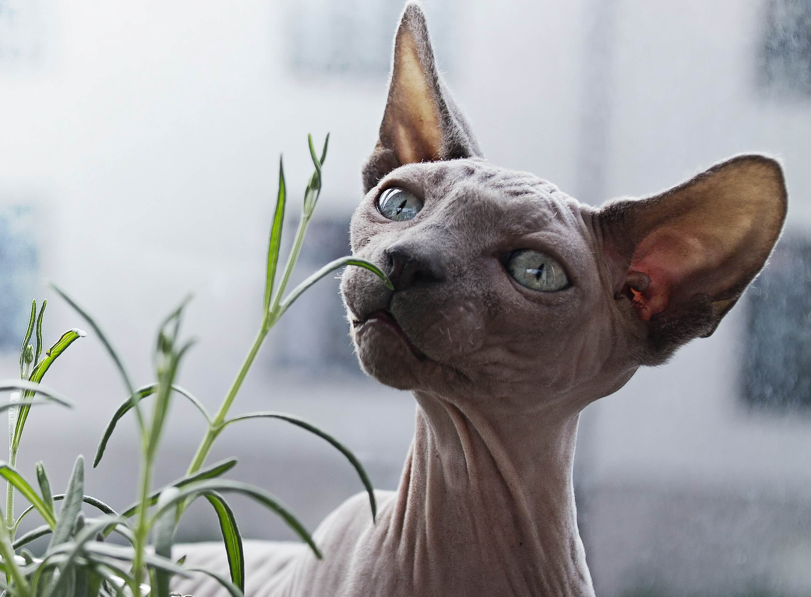
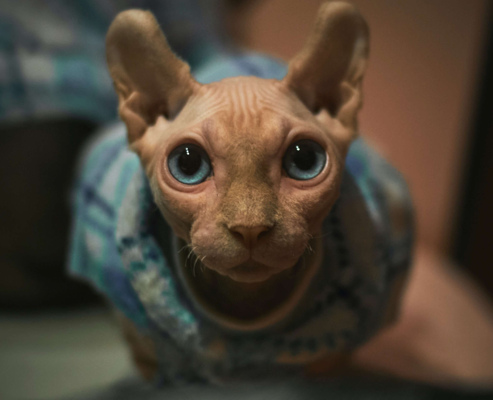
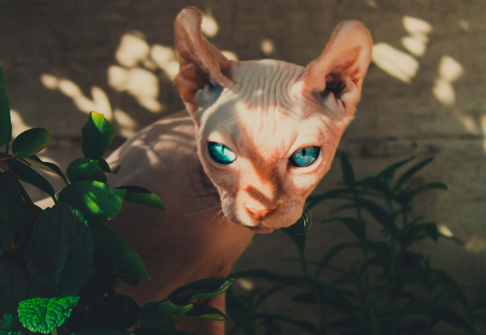
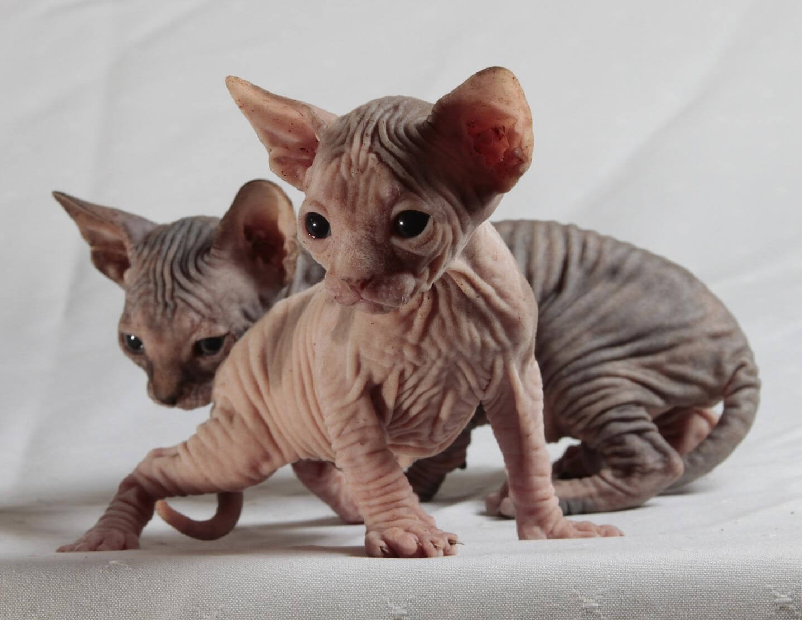
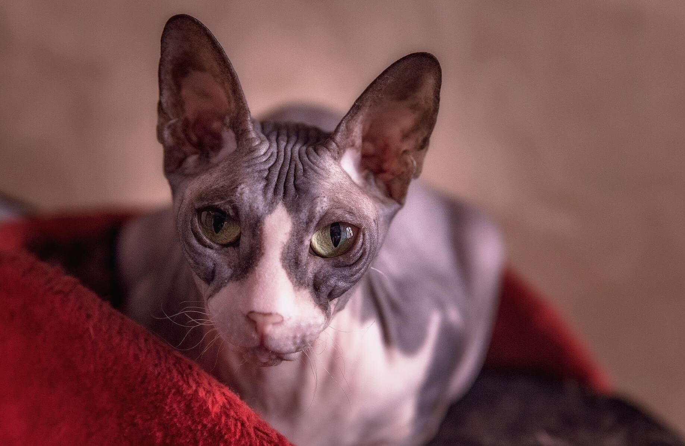
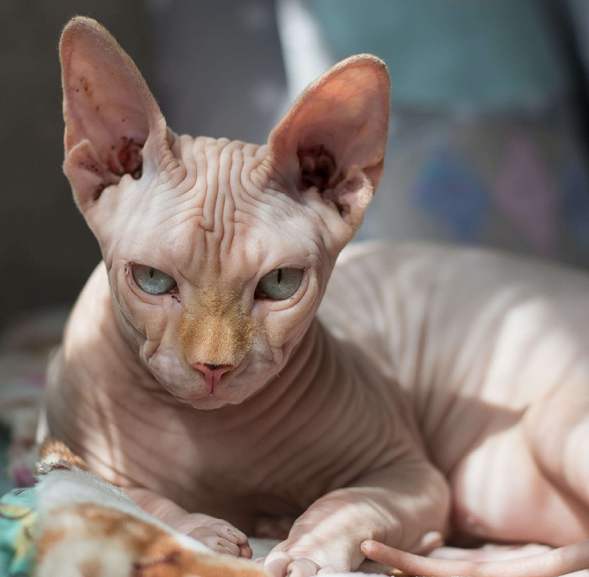

“Jeví se jako bezsrstná kočka, ale není to pravda. Má mechovinou texturu kůže a někdy bývá kokryta drobnými choupky”
Historie a původ plemene
Plemeno Sphynx, jak ho známe dnes, má svůj počátek v roce 1966, kdy se v Roncesvalles v Torontu narodilo bezsrsté kotě jménem Prune. Když Prune dosáhl dospělosti, byl opět spojen se svou matkou a narodilo se další bezsrsté kotě. Tyto kočky spolu s několika dalšími bezsrstými kočkami neznámého původu vytvořily základ pro linii kanadských sphynxů
Bohužel mělo plemeno velmi těžké začátky kvůli omezené genetice. V 70. letech 20. století byli poslední dva Pruneovi potomci - kocour a kočka - posláni do Holandska. Snahy o záchranu sphynxe byly bezvýsledné, i když v letech 1978 a 1980 byly do Holandska poslány další dvě bezsrsté samice, které byly bez úspěchu nakryty posledním samčím dědicem Prune.
Chovatelé se ve svém úsilí nevzdávali. Místo toho párovali bezsrsté samice s plemeníky plemene Devon rex. Další dvě bezsrsté samice - příznačně pojmenované Dermis a Epidermis - byly nalezeny ve stodole v Minnesotě a byly zařazeny do chovného programu sphynxů. Později se k nim přidaly další bezsrsté kočky z Minnesoty a některé z Arkansasu a Texasu.
Pokud hledáte přátelskou kočku s velkou osobností, může být Sphynx ideální. Bonusové body získáte, pokud doufáte v domácího mazlíčka, který nelíná, protože tyto bezsrsté kočky jsou buď úplně bez srsti, nebo jsou pokryty nejtenčí vrstvou jemného sametové srsti.
Sphynx s výraznými rysy a upřeným pohledem možná nepůsobí jako nejpřátelštější kočka na světě, ale nenechte se zmást vzhledem této kočičky! Sphynx je společenská a přátelská kočka, která se s každým, včetně cizích lidí a jiných domácích zvířat, podělí o spoustu lásky. Kočky sphynx rychle vítají členy své rodiny u dveří a stejně rychle skočí pod peřinu, když přijde čas spánku, a využívají každou možnou příležitost ke komunikaci.
Bez dostatečné společnosti se sphynx rychle stává sklíčenou, znuděnou a destruktivní. Tyto kočičky naprosto nesnášejí, když zůstanou samy, a když s vámi tráví čas, mají tendenci nabízet nevyžádanou pomoc a rady. Hlasité mňoukání může ustoupit neutuchajícímu naříkání, pokud se pokusíte Sphynxe uzavřít do jeho vlastního prostoru, což činí tyto kočky nevhodnými pro rodiny, které nechtějí od svého mazlíčka vysokou míru angažovanosti.
V neposlední řadě je třeba kočky sShynx udržovat v teple a chránit je před povětrnostními vlivy. Tyto kočky nemohou žít venku, kde by trpěly úpalem a úžehem od větru, a i uvnitř vyhledávají co nejteplejší místo k odpočinku. Nabídněte kočkám vyhřívaný pelíšek a budete přesně vědět, kde svého sphynxe najdete, až bude čas na hraní..
Sphynxové nejsou hypoalergenní. Někteří lidé s alergií na kočky zjišťují, že se jejich příznaky zhoršují v blízkosti bezsrstých koček, zatímco jiní zjišťují, že nemají žádné problémy. Pokud jste alergičtí na kočky a chcete Sphynxe, nezapomeňte strávit nějaký čas se Sphynxy, abyste zjistili, zda se u vás reakce neobjeví.
Sphynx má na kůži širokou škálu znaků, od jednobarevných přes tečkované až po tabu a harlekýny.
Oblečení pro Sphynxe je stále snadněji k sehnání, protože mnoho rodin se rozhodlo pomoci svým mazlíčkům zůstat v teple tím, že je oblékají.
Kvalitní krmivo je pro Sphynxe zásadní, protože méně kvalitní krmivo může vést k vážným kožním problémům a způsobovat nadměrnou produkci tuku. Hledejte značku s vysokým obsahem bílkovin a nízkým obsahem sacharidů, jejíž hlavní složkou je pravé maso nebo ryby.
Možná si myslíte, že Sphynx vyžaduje jen velmi málo péče, ale opak je pravdou. Tyto kočky sice nepotřebují kartáčování, ale vyžadují poměrně časté koupání, aby se odstranil přebytečný olej, který může vést k usazování mastnoty a podráždění. Hledejte jemný šampon pro kočky a používejte teplou vodu, která je příjemná pro vlastní kůži. Tyto kočky vůbec nesnášejí teplotní extrémy.
Často také kontrolujte uši své kočky. Pokud si všimnete nečistot hluboko v uchu, nechte je vyčistit veterinářem nebo profesionálním ošetřovatelem. Mezi hloubkovým čištěním otírejte mastné zbytky vatovým tamponem, který byl navlhčen jemným roztokem 50 % vody a 50 % octa.
Sphynxové jsou náchylné k tvorbě usazenin mezi prsty, proto byste jim měli několikrát týdně umývat tlapky, abyste zabránili vzniku infekcí. Je také dobré kočce pravidelně stříhat nehty na nohou. Tato rutina je nejjednodušší, když s ní začnete od útlého věku; časem ji vaše kočka přijme bez většího povyku
Galerie

Tělo je středně dlouhé, s bohatým osvalením, zakulaceným břichem, kulatým hrudníkem a zaobleným zadkem

Oči kočky sphynx by měly být velké a citronovitého tvaru, se širokými středy a dobře ohraničenými body na obou stranách.

Všechny barvy a vzory sphynx koček jsou přijatelné, s výjimkou bílých medailonků, skvrn na břiše a knoflíků u výstavních koček.

Sphynx může vážit od 8 do 16 kg.

Průměrná délka života Sphynxů je 13-14 let.

Sphynxové jsou považovány za bezsrsté plemeno koček, nemají srst, která líná a musí se upravovat.